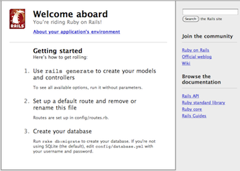
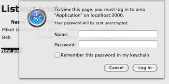

These guides are designed to make you immediately productive with Rails, and to help you understand how all of the pieces fit together.
This guide is designed for beginners who want to get started with a Rails application from scratch. It does not assume that you have any prior experience with Rails. However, to get the most out of it, you need to have some prerequisites installed:
Rails is a web application framework running on the Ruby programming language. If you have no prior experience with Ruby, you will find a very steep learning curve diving straight into Rails. There are some good free resources on the internet for learning Ruby, including:
Rails is a web application development framework written in the Ruby language. It is designed to make programming web applications easier by making assumptions about what every developer needs to get started. It allows you to write less code while accomplishing more than many other languages and frameworks. Experienced Rails developers also report that it makes web application development more fun.
Rails is opinionated software. It makes the assumption that there is a “best” way to do things, and it’s designed to encourage that way – and in some cases to discourage alternatives. If you learn “The Rails Way” you’ll probably discover a tremendous increase in productivity. If you persist in bringing old habits from other languages to your Rails development, and trying to use patterns you learned elsewhere, you may have a less happy experience.
The Rails philosophy includes several guiding principles:
At the core of Rails is the Model, View, Controller architecture, usually just called MVC. MVC benefits include:
A model represents the information (data) of the application and the rules to manipulate that data. In the case of Rails, models are primarily used for managing the rules of interaction with a corresponding database table. In most cases, one table in your database will correspond to one model in your application. The bulk of your application’s business logic will be concentrated in the models.
Views represent the user interface of your application. In Rails, views are often HTML files with embedded Ruby code that perform tasks related solely to the presentation of the data. Views handle the job of providing data to the web browser or other tool that is used to make requests from your application.
Controllers provide the “glue” between models and views. In Rails, controllers are responsible for processing the incoming requests from the web browser, interrogating the models for data, and passing that data on to the views for presentation.
Rails ships as many individual components.
Action Pack is a single gem that contains Action Controller, Action View and Action Dispatch. The "VC" part of "MVC".
Action Controller is the component that manages the controllers in a Rails application. The Action Controller framework processes incoming requests to a Rails application, extracts parameters, and dispatches them to the intended action. Services provided by Action Controller include session management, template rendering, and redirect management.
Action View manages the views of your Rails application. It can create both HTML and XML output by default. Action View manages rendering templates, including nested and partial templates, and includes built-in AJAX support.
Action Dispatch handles routing of web requests and dispatches them as you want, either to your application or any other Rack application.
Action Mailer is a framework for building e-mail services. You can use Action Mailer to receive and process incoming email and send simple plain text or complex multipart emails based on flexible templates.
Active Model provides a defined interface between the Action Pack gem services and Object Relationship Mapping gems such as Active Record. Active Model allows Rails to utilize other ORM frameworks in place of Active Record if your application needs this.
Active Record is the base for the models in a Rails application. It provides database independence, basic CRUD functionality, advanced finding capabilities, and the ability to relate models to one another, among other services.
Active Resource provides a framework for managing the connection between business objects and RESTful web services. It implements a way to map web-based resources to local objects with CRUD semantics.
Active Support is an extensive collection of utility classes and standard Ruby library extensions that are used in the Rails, both by the core code and by your applications.
Railties is the core Rails code that builds new Rails applications and glues the various frameworks and plugins together in any Rails application.
Rest stands for Representational State Transfer and is the foundation of the RESTful architecture. This is generally considered to be Roy Fielding’s doctoral thesis, Architectural Styles and the Design of Network-based Software Architectures. While you can read through the thesis, REST in terms of Rails boils down to two main principles:
For example, to a Rails application a request such as this:
DELETE /photos/17
would be understood to refer to a photo resource with the ID of 17, and to indicate a desired action – deleting that resource. REST is a natural style for the architecture of web applications, and Rails hooks into this shielding you from many of the RESTful complexities and browser quirks.
If you’d like more details on REST as an architectural style, these resources are more approachable than Fielding’s thesis:
If you follow this guide, you’ll create a Rails project called blog, a (very) simple weblog. Before you can start building the application, you need to make sure that you have Rails itself installed.
In most cases, the easiest way to install Rails is to take advantage of RubyGems:
Usually run this as the root user:
# gem install rails
If you’re working on Windows, you should be aware that the vast majority of Rails development is done in Unix environments. While Ruby and Rails themselves install easily using for example Ruby Installer, the supporting ecosystem often assumes you are able to build C-based rubygems and work in a command window. If at all possible, we suggest that you install a Linux virtual machine and use that for Rails development, instead of using Windows.
The best way to use this guide is to follow each step as it happens, no code or step needed to make this example application has been left out, so you can literally follow along step by step. If you need to see the completed code, you can download it from Getting Started Code.
To begin, open a terminal, navigate to a folder where you have rights to create files, and type:
$ rails new blog
This will create a Rails application called Blog in a directory called blog.
You can see all of the switches that the Rails application builder accepts by running rails -h.
After you create the blog application, switch to its folder to continue work directly in that application:
$ cd blog
In any case, Rails will create a folder in your working directory called blog. Open up that folder and explore its contents. Most of the work in this tutorial will happen in the app/ folder, but here’s a basic rundown on the function of each folder that Rails creates in a new application by default:
| File/Folder | Purpose |
|---|---|
| Gemfile | This file allows you to specify what gem dependencies are needed for your Rails application. |
| README.rdoc | This is a brief instruction manual for your application. Use it to tell others what your application does, how to set it up, and so on. |
| Rakefile | This file contains batch jobs that can be run from the terminal. |
| app/ | Contains the controllers, models, and views for your application. You’ll focus on this folder for the remainder of this guide. |
| config/ | Configure your application’s runtime rules, routes, database, and more. |
| config.ru | Rack configuration for Rack based servers used to start the application. |
| db/ | Shows your current database schema, as well as the database migrations. You’ll learn about migrations shortly. |
| doc/ | In-depth documentation for your application. |
| lib/ | Extended modules for your application (not covered in this guide). |
| log/ | Application log files. |
| public/ | The only folder seen to the world as-is. This is where your images, javascript, stylesheets (CSS), and other static files go. |
| script/ | Contains the rails script that starts your app and can contain other scripts you use to deploy or run your application. |
| test/ | Unit tests, fixtures, and other test apparatus. |
| tmp/ | Temporary files. |
| vendor/ | A place for all third-party code. In a typical Rails application, this includes Ruby Gems, the Rails source code (if you install it into your project) and plugins containing additional prepackaged functionality. |
Rails applications manage gem dependencies with Bundler by default. As we don’t need any other gems beyond the ones in the generated Gemfile we can directly run
bundle install
to have them ready.
Just about every Rails application will interact with a database. The database to use is specified in a configuration file, config/database.yml. If you open this file in a new Rails application, you’ll see a default database configuration using SQLite3. The file contains sections for three different environments in which Rails can run by default:
development environment is used on your development computer as you interact manually with the applicationtest environment is used to run automated testsproduction environment is used when you deploy your application for the world to use.Rails comes with built-in support for SQLite3, which is a lightweight serverless database application. While a busy production environment may overload SQLite, it works well for development and testing. Rails defaults to using an SQLite database when creating a new project, but you can always change it later.
Here’s the section of the default configuration file (config/database.yml) with connection information for the development environment:
development: adapter: sqlite3 database: db/development.sqlite3 pool: 5 timeout: 5000
In this guide we are using an SQLite3 database for data storage, because it is a zero configuration database that just works. Rails also supports MySQL and PostgreSQL “out of the box”, and has plugins for many database systems. If you are using a database in a production environment Rails most likely has an adapter for it.
If you choose to use MySQL instead of the shipped Sqlite3 database, your config/database.yml will look a little different. Here’s the development section:
development: adapter: mysql2 encoding: utf8 database: blog_development pool: 5 username: root password: socket: /tmp/mysql.sock
If your development computer’s MySQL installation includes a root user with an empty password, this configuration should work for you. Otherwise, change the username and password in the development section as appropriate.
Finally if you choose to use PostgreSQL, your config/database.yml will be customized to use PostgreSQL databases:
development: adapter: postgresql encoding: unicode database: blog_development pool: 5 username: blog password:
Change the username and password in the development section as appropriate.
Now that you have your database configured, it’s time to have Rails create an empty database for you. You can do this by running a rake command:
$ rake db:create
This will create your development and test SQLite3 databases inside the db/ folder.
Rake is a general-purpose command-runner that Rails uses for many things. You can see the list of available rake commands in your application by running rake -T.
One of the traditional places to start with a new language is by getting some text up on screen quickly, to do this, you need to get your Rails application server running.

You actually have a functional Rails application already. To see it, you need to start a web server on your development machine. You can do this by running:
$ rails server
This will fire up an instance of the Mongrel web server by default (Rails can also use several other web servers). To see your application in action, open a browser window and navigate to http://localhost:3000. You should see Rails’ default information page:
To stop the web server, hit Ctrl+C in the terminal window where it’s running. In development mode, Rails does not generally require you to stop the server; changes you make in files will be automatically picked up by the server.
The “Welcome Aboard” page is the smoke test for a new Rails application: it makes sure that you have your software configured correctly enough to serve a page. You can also click on the About your application’s environment link to see a summary of your Application’s environment.
To get Rails saying “Hello”, you need to create at minimum a controller and a view. Fortunately, you can do that in a single command. Enter this command in your terminal:
$ rails generate controller home index
If you’re on Windows, or your Ruby is set up in some non-standard fashion, you may need to explicitly pass Rails rails commands to Ruby: ruby \path\to\rails controller home index.
Rails will create several files for you, including app/views/home/index.html.erb. This is the template that will be used to display the results of the index action (method) in the home controller. Open this file in your text editor and edit it to contain a single line of code:
<h1>Hello, Rails!</h1>
Now that we have made the controller and view, we need to tell Rails when we want “Hello Rails” to show up. In our case, we want it to show up when we navigate to the root URL of our site, http://localhost:3000, instead of the “Welcome Aboard” smoke test.
The first step to doing this is to delete the default page from your application:
$ rm public/index.html
We need to do this as Rails will deliver any static file in the public directory in preference to any dynamic contact we generate from the controllers.
Now, you have to tell Rails where your actual home page is located. Open the file config/routes.rb in your editor. This is your application’s routing file which holds entries in a special DSL (domain-specific language) that tells Rails how to connect incoming requests to controllers and actions. This file contains many sample routes on commented lines, and one of them actually shows you how to connect the root of your site to a specific controller and action. Find the line beginning with :root to, uncomment it and change it like the following:
Blog::Application.routes.draw do #... # You can have the root of your site routed with "root" # just remember to delete public/index.html. root :to => "home#index"
The root :to => "home#index" tells Rails to map the root action to the home controller’s index action.
Now if you navigate to http://localhost:3000 in your browser, you’ll see Hello, Rails!.
For more information about routing, refer to Rails Routing from the Outside In.
Rails scaffolding is a quick way to generate some of the major pieces of an application. If you want to create the models, views, and controllers for a new resource in a single operation, scaffolding is the tool for the job.
In the case of the blog application, you can start by generating a scaffolded Post resource: this will represent a single blog posting. To do this, enter this command in your terminal:
$ rails generate scaffold Post name:string title:string content:text
While scaffolding will get you up and running quickly, the “one size fits all” code that it generates is unlikely to be a perfect fit for your application. In most cases, you’ll need to customize the generated code. Many experienced Rails developers avoid scaffolding entirely, preferring to write all or most of their source code from scratch.
The scaffold generator will build 15 files in your application, along with some folders, and edit one more. Here’s a quick overview of what it creates:
| File | Purpose |
|---|---|
| db/migrate/20100207214725_create_posts.rb.rb | Migration to create the posts table in your database (your name will include a different timestamp) |
| app/models/post.rb | The Post model |
| test/fixtures/posts.yml | Dummy posts for use in testing |
| app/controllers/posts_controller.rb | The Posts controller |
| app/views/posts/index.html.erb | A view to display an index of all posts |
| db/migrate/20100207214725_create_posts.rb | Migration to create the posts table in your database (your name will include a different timestamp) |
| app/views/posts/edit.html.erb | A view to edit an existing post |
| app/views/posts/show.html.erb | A view to display a single post |
| app/views/posts/_form.html.erb | A partial to control the overall look and feel of the form used in edit and new views |
| app/helpers/posts_helper.rb | Helper functions to be used from the post views |
| test/unit/post_test.rb | Unit testing harness for the posts model |
| test/functional/posts_controller_test.rb | Functional testing harness for the posts controller |
| test/unit/helpers/posts_helper_test.rb | Unit testing harness for the posts helper |
| config/routes.rb | Edited to include routing information for posts |
| public/stylesheets/scaffold.css | Cascading style sheet to make the scaffolded views look better |
One of the products of the rails generate scaffold command is a database migration. Migrations are Ruby classes that are designed to make it simple to create and modify database tables. Rails uses rake commands to run migrations, and it’s possible to undo a migration after it’s been applied to your database. Migration filenames include a timestamp to ensure that they’re processed in the order that they were created.
If you look in the db/migrate/20100207214725_create_posts.rb file (remember, yours will have a slightly different name), here’s what you’ll find:
class CreatePosts < ActiveRecord::Migration def self.up create_table :posts do |t| t.string :name t.string :title t.text :content t.timestamps end end def self.down drop_table :posts end end
The above migration creates two methods, up, called when you run this migration into the database, and down in case you need to reverse the changes made by this migration at a later date. The up command in this case creates a posts table with two string columns and a text column. It also creates two timestamp fields to track record creation and updating. More information about Rails migrations can be found in the Rails Database Migrations guide.
At this point, you can use a rake command to run the migration:
$ rake db:migrate
Rails will execute this migration command and tell you it created the Posts table.
== CreatePosts: migrating ===========
-- create_table(:posts)
-> 0.0019s
== CreatePosts: migrated (0.0020s) ==
Because you’re working in the development environment by default, this command will apply to the database defined in the development section of your config/database.yml file.
To hook the posts up to the home page you’ve already created, you can add a link to the home page. Open app/views/home/index.html.erb and modify it as follows:
<h1>Hello, Rails!</h1> <%= link_to "My Blog", posts_path %>
The link_to method is one of Rails’ built-in view helpers. It creates a hyperlink based on text to display and where to go – in this case, to the path for posts.
Now you’re ready to start working with posts. To do that, navigate to http://localhost:3000 and then click the “My Blog” link:
This is the result of Rails rendering the index view of your posts. There aren’t currently any posts in the database, but if you click the New Post link you can create one. After that, you’ll find that you can edit posts, look at their details, or destroy them. All of the logic and HTML to handle this was built by the single rails generate scaffold command.
In development mode (which is what you’re working in by default), Rails reloads your application with every browser request, so there’s no need to stop and restart the web server.
Congratulations, you’re riding the rails! Now it’s time to see how it all works.
The model file, app/models/post.rb is about as simple as it can get:
class Post < ActiveRecord::Base end
There isn’t much to this file – but note that the Post class inherits from ActiveRecord::Base. Active Record supplies a great deal of functionality to your Rails models for free, including basic database CRUD (Create, Read, Update, Destroy) operations, data validation, as well as sophisticated search support and the ability to relate multiple models to one another.
Rails includes methods to help you validate the data that you send to models. Open the app/models/post.rb file and edit it:
class Post < ActiveRecord::Base validates :name, :presence => true validates :title, :presence => true, :length => { :minimum => 5 } end
These changes will ensure that all posts have a name and a title, and that the title is at least five characters long. Rails can validate a variety of conditions in a model, including the presence or uniqueness of columns, their format, and the existence of associated objects.
To see your validations in action, you can use the console. The console is a command-line tool that lets you execute Ruby code in the context of your application:
$ rails console
After the console loads, you can use it to work with your application’s models:
["<pre", "class=\"#{config[:theme]}\">#{code}"]
This code shows creating a new Post instance, attempting to save it and getting false for a return value (indicating that the save failed), and inspecting the errors of the post.
When you’re finished, type exit and hit return to exit the console.
Unlike the development web server, the console does not automatically load your code afresh for each line. If you make changes to your models while the console is open, type reload! at the console prompt to load them.
The easiest place to start looking at functionality is with the code that lists all posts. Open the file app/controllers/posts_controller.rb and look at the index action:
def index @posts = Post.all respond_to do |format| format.html # index.html.erb format.xml { render :xml => @posts } end end
Post.all calls the Post model to return all of the posts currently in the database. The result of this call is an array containing the posts which has been saved in an instance variable called @posts.
For more information on finding records with Active Record, see Active Record Query Interface.
The respond_to block handles both HTML and XML calls to this action. If you browse to http://localhost:3000/posts.xml, you’ll see all of the posts in XML format. The HTML format looks for a view in app/views/posts/ with a name that corresponds to the action name. Rails makes all of the instance variables from the action available to the view. Here’s app/views/posts/index.html.erb:
<h1>Listing posts</h1> <table> <tr> <th>Name</th> <th>Title</th> <th>Content</th> <th></th> <th></th> <th></th> </tr> <% @posts.each do |post| %> <tr> <td><%= post.name %></td> <td><%= post.title %></td> <td><%= post.content %></td> <td><%= link_to 'Show', post %></td> <td><%= link_to 'Edit', edit_post_path(post) %></td> <td><%= link_to 'Destroy', post, :confirm => 'Are you sure?', :method => :delete %></td> </tr> <% end %> </table> <br /> <%= link_to 'New post', new_post_path %>
This view iterates over the contents of the @posts array to display content and links. A few things to note in the view:
link_to builds a hyperlink to a particular destinationedit_post_path and new_post_path are helpers that Rails provides as part of RESTful routing. You’ll see a variety of these helpers for the different actions that the controller includes.
In previous versions of Rails, you had to use <%=h post.name %> so that any HTML would be escaped before being inserted into the page. In Rails 3.0, this is now the default. To get unescaped HTML, you now use <%= raw post.name %>. For more details on the rendering process, see Layouts and Rendering in Rails.
The view is only part of the story of how HTML is displayed in your web browser. Rails also has the concept of layouts, which are containers for views. When Rails renders a view to the browser, it does so by putting the view’s HTML into a layout’s HTML. In previous versions of Rails, the rails generate scaffold command would automatically create a controller specific layout, like app/views/layouts/posts.html.erb, for the posts controller. However this has been changed in Rails 3.0. A application specific layout is used for all the controllers and can be found in app/views/layouts/application.html.erb. Open this layout in your editor and modify the body tag:
<!DOCTYPE html> <html> <head> <title>Blog</title> <%= stylesheet_link_tag :all %> <%= javascript_include_tag :defaults %> <%= csrf_meta_tag %> </head> <body style="background: #EEEEEE;"> <%= yield %> </body> </html>
Now when you refresh the /posts page, you’ll see a gray background to the page. This same gray background will be used throughout all the views for posts.
Creating a new post involves two actions. The first is the new action, which instantiates an empty Post object:
def new @post = Post.new respond_to do |format| format.html # new.html.erb format.xml { render :xml => @post } end end
The new.html.erb view displays this empty Post to the user:
<h1>New post</h1> <%= render 'form' %> <%= link_to 'Back', posts_path %>
The <%= render 'form' %> line is our first introduction to partials in Rails. A partial is a snippet of HTML and Ruby code that can be reused in multiple locations. In this case, the form used to make a new post, is basically identical to a form used to edit a post, both have text fields for the name and title and a text area for the content with a button to make a new post or update the existing post.
If you take a look at views/posts/_form.html.erb file, you will see the following:
<%= form_for(@post) do |f| %> <% if @post.errors.any? %> <div id="errorExplanation"> <h2><%= pluralize(@post.errors.count, "error") %> prohibited this post from being saved:</h2> <ul> <% @post.errors.full_messages.each do |msg| %> <li><%= msg %></li> <% end %> </ul> </div> <% end %> <div class="field"> <%= f.label :name %><br /> <%= f.text_field :name %> </div> <div class="field"> <%= f.label :title %><br /> <%= f.text_field :title %> </div> <div class="field"> <%= f.label :content %><br /> <%= f.text_area :content %> </div> <div class="actions"> <%= f.submit %> </div> <% end %>
This partial receives all the instance variables defined in the calling view file, so in this case, the controller assigned the new Post object to @post and so, this is available in both the view and partial as @post.
For more information on partials, refer to the Layouts and Rendering in Rails guide.
The form_for block is used to create an HTML form. Within this block, you have access to methods to build various controls on the form. For example, f.text_field :name tells Rails to create a text input on the form, and to hook it up to the name attribute of the instance being displayed. You can only use these methods with attributes of the model that the form is based on (in this case name, title, and content). Rails uses form_for in preference to having you write raw HTML because the code is more succinct, and because it explicitly ties the form to a particular model instance.
The form_for block is also smart enough to work out if you are doing a New Post or an Edit Post action, and will set the form action tags and submit button names appropriately in the HTML output.
If you need to create an HTML form that displays arbitrary fields, not tied to a model, you should use the form_tag method, which provides shortcuts for building forms that are not necessarily tied to a model instance.
When the user clicks the Create Post button on this form, the browser will send information back to the create method of the controller (Rails knows to call the create method because the form is sent with an HTTP POST request; that’s one of the conventions that I mentioned earlier):
def create @post = Post.new(params[:post]) respond_to do |format| if @post.save format.html { redirect_to(@post, :notice => 'Post was successfully created.') } format.xml { render :xml => @post, :status => :created, :location => @post } else format.html { render :action => "new" } format.xml { render :xml => @post.errors, :status => :unprocessable_entity } end end end
The create action instantiates a new Post object from the data supplied by the user on the form, which Rails makes available in the params hash. After successfully saving the new post, create returns the appropriate format that the user has requested (HTML in our case). It then redirects the user to the resulting post show action and sets a notice to the user that the Post was successfully created.
If the post was not successfully saved, due to a validation error, then the controller returns the user back to the new action with any error messages so that the user has the chance to fix the error and try again.
The “Post was successfully created” message is stored inside of the Rails flash hash, (usually just called the Flash) so that messages can be carried over to another action, providing the user with useful information on the status of their request. In the case of create, the user never actually sees any page rendered during the Post creation process, because it immediately redirects to the new Post as soon Rails saves the record. The Flash carries over a message to the next action, so that when the user is redirected back to the show action, they are presented with a message saying “Post was successfully created.”
When you click the show link for a post on the index page, it will bring you to a URL like http://localhost:3000/posts/1. Rails interprets this as a call to the show action for the resource, and passes in 1 as the :id parameter. Here’s the show action:
def show @post = Post.find(params[:id]) respond_to do |format| format.html # show.html.erb format.xml { render :xml => @post } end end
The show action uses Post.find to search for a single record in the database by its id value. After finding the record, Rails displays it by using show.html.erb:
<p class="notice"><%= notice %></p> <p> <b>Name:</b> <%= @post.name %> </p> <p> <b>Title:</b> <%= @post.title %> </p> <p> <b>Content:</b> <%= @post.content %> </p> <%= link_to 'Edit', edit_post_path(@post) %> | <%= link_to 'Back', posts_path %>
Like creating a new post, editing a post is a two-part process. The first step is a request to edit_post_path(@post) with a particular post. This calls the edit action in the controller:
def edit @post = Post.find(params[:id]) end
After finding the requested post, Rails uses the edit.html.erb view to display it:
<h1>Editing post</h1> <%= render 'form' %> <%= link_to 'Show', @post %> | <%= link_to 'Back', posts_path %>
Again, as with the new action, the edit action is using the form partial, this time however, the form will do a PUT action to the PostsController and the submit button will display “Update Post”.
Submitting the form created by this view will invoke the update action within the controller:
def update @post = Post.find(params[:id]) respond_to do |format| if @post.update_attributes(params[:post]) format.html { redirect_to(@post, :notice => 'Post was successfully updated.') } format.xml { head :ok } else format.html { render :action => "edit" } format.xml { render :xml => @post.errors, :status => :unprocessable_entity } end end end
In the update action, Rails first uses the :id parameter passed back from the edit view to locate the database record that’s being edited. The update_attributes call then takes the rest of the parameters from the request and applies them to this record. If all goes well, the user is redirected to the post’s show view. If there are any problems, it’s back to the edit view to correct them.
Finally, clicking one of the destroy links sends the associated id to the destroy action:
def destroy @post = Post.find(params[:id]) @post.destroy respond_to do |format| format.html { redirect_to(posts_url) } format.xml { head :ok } end end
The destroy method of an Active Record model instance removes the corresponding record from the database. After that’s done, there isn’t any record to display, so Rails redirects the user’s browser to the index view for the model.
Now that you’ve seen how a model built with scaffolding looks like, it’s time to add a second model to the application. The second model will handle comments on blog posts.
Models in Rails use a singular name, and their corresponding database tables use a plural name. For the model to hold comments, the convention is to use the name Comment. Even if you don’t want to use the entire apparatus set up by scaffolding, most Rails developers still use generators to make things like models and controllers. To create the new model, run this command in your terminal:
$ rails generate model Comment commenter:string body:text post:references
This command will generate four files:
app/models/comment.rb – The modeldb/migrate/20100207235629_create_comments.rb – The migrationtest/unit/comment_test.rb and test/fixtures/comments.yml – The test harness.First, take a look at comment.rb:
class Comment < ActiveRecord::Base belongs_to :post end
This is very similar to the post.rb model that you saw earlier. The difference is the line belongs_to :post, which sets up an Active Record association. You’ll learn a little about associations in the next section of this guide.
In addition to the model, Rails has also made a migration to create the corresponding database table:
class CreateComments < ActiveRecord::Migration def self.up create_table :comments do |t| t.string :commenter t.text :body t.references :post t.timestamps end end def self.down drop_table :comments end end
The t.references line sets up a foreign key column for the association between the two models. Go ahead and run the migration:
$ rake db:migrate
Rails is smart enough to only execute the migrations that have not already been run against the current database, so in this case you will just see:
== CreateComments: migrating ============
-- create_table(:comments)
-> 0.0017s
== CreateComments: migrated (0.0018s) ===
Active Record associations let you easily declare the relationship between two models. In the case of comments and posts, you could write out the relationships this way:
In fact, this is very close to the syntax that Rails uses to declare this association. You’ve already seen the line of code inside the Comment model that makes each comment belong to a Post:
class Comment < ActiveRecord::Base belongs_to :post end
You’ll need to edit the post.rb file to add the other side of the association:
class Post < ActiveRecord::Base validates :name, :presence => true validates :title, :presence => true, :length => { :minimum => 5 } has_many :comments end
These two declarations enable a good bit of automatic behavior. For example, if you have an instance variable @post containing a post, you can retrieve all the comments belonging to that post as the array @post.comments.
For more information on Active Record associations, see the Active Record Associations guide.
As with the home controller, we will need to add a route so that Rails knows where we would like to navigate to see comments. Open up the config/routes.rb file again, you will see an entry that was added automatically for posts near the top by the scaffold generator, resources :posts, edit it as follows:
resources :posts do resources :comments end
This creates comments as a nested resource within posts. This is another part of capturing the hierarchical relationship that exists between posts and comments.
For more information on routing, see the Rails Routing from the Outside In guide.
With the model in hand, you can turn your attention to creating a matching controller. Again, there’s a generator for this:
$ rails generate controller Comments
This creates four files and one empty directory:
app/controllers/comments_controller.rb – The controllerapp/helpers/comments_helper.rb – A view helper filetest/functional/comments_controller_test.rb – The functional tests for the controllertest/unit/helpers/comments_helper_test.rb – The unit tests for the helperapp/views/comments/ – Views of the controller are stored hereLike with any blog, our readers will create their comments directly after reading the post, and once they have added their comment, will be sent back to the post show page to see their comment now listed. Due to this, our CommentsController is there to provide a method to create comments and delete SPAM comments when they arrive.
So first, we’ll wire up the Post show template (/app/views/posts/show.html.erb) to let us make a new comment:
<p class="notice"><%= notice %></p> <p> <b>Name:</b> <%= @post.name %> </p> <p> <b>Title:</b> <%= @post.title %> </p> <p> <b>Content:</b> <%= @post.content %> </p> <h2>Add a comment:</h2> <%= form_for([@post, @post.comments.build]) do |f| %> <div class="field"> <%= f.label :commenter %><br /> <%= f.text_field :commenter %> </div> <div class="field"> <%= f.label :body %><br /> <%= f.text_area :body %> </div> <div class="actions"> <%= f.submit %> </div> <% end %> <%= link_to 'Edit Post', edit_post_path(@post) %> | <%= link_to 'Back to Posts', posts_path %> |
This adds a form on the Post show page that creates a new comment, which will call the CommentsController create action, so let’s wire that up:
class CommentsController < ApplicationController def create @post = Post.find(params[:post_id]) @comment = @post.comments.create(params[:comment]) redirect_to post_path(@post) end end
You’ll see a bit more complexity here than you did in the controller for posts. That’s a side-effect of the nesting that you’ve set up; each request for a comment has to keep track of the post to which the comment is attached, thus the initial find action to the Post model to get the post in question.
In addition, the code takes advantage of some of the methods available for an association. We use the create method on @post.comments to create and save the comment. This will automatically link the comment so that it belongs to that particular post.
Once we have made the new comment, we send the user back to the original post using the post_path(@post) helper. As we have already seen, this calls the show action of the PostsController which in turn renders the show.html.erb template. This is where we want the comment to show, so let’s add that to the app/views/posts/show.html.erb.
<p class="notice"><%= notice %></p> <p> <b>Name:</b> <%= @post.name %> </p> <p> <b>Title:</b> <%= @post.title %> </p> <p> <b>Content:</b> <%= @post.content %> </p> <h2>Comments</h2> <% @post.comments.each do |comment| %> <p> <b>Commenter:</b> <%= comment.commenter %> </p> <p> <b>Comment:</b> <%= comment.body %> </p> <% end %> <h2>Add a comment:</h2> <%= form_for([@post, @post.comments.build]) do |f| %> <div class="field"> <%= f.label :commenter %><br /> <%= f.text_field :commenter %> </div> <div class="field"> <%= f.label :body %><br /> <%= f.text_area :body %> </div> <div class="actions"> <%= f.submit %> </div> <% end %> <br /> <%= link_to 'Edit Post', edit_post_path(@post) %> | <%= link_to 'Back to Posts', posts_path %> |
Now you can add posts and comments to your blog and have them show up in the right places.
Now that we have Posts and Comments working, if we take a look at the app/views/posts/show.html.erb template, it’s getting long and awkward. We can use partials to clean this up.
First we will make a comment partial to extract showing all the comments for the post. Create the file app/views/comments/_comment.html.erb and put the following into it:
<p> <b>Commenter:</b> <%= comment.commenter %> </p> <p> <b>Comment:</b> <%= comment.body %> </p>
Then in the app/views/posts/show.html.erb you can change it to look like the following:
<p class="notice"><%= notice %></p> <p> <b>Name:</b> <%= @post.name %> </p> <p> <b>Title:</b> <%= @post.title %> </p> <p> <b>Content:</b> <%= @post.content %> </p> <h2>Comments</h2> <%= render :partial => "comments/comment", :collection => @post.comments %> <h2>Add a comment:</h2> <%= form_for([@post, @post.comments.build]) do |f| %> <div class="field"> <%= f.label :commenter %><br /> <%= f.text_field :commenter %> </div> <div class="field"> <%= f.label :body %><br /> <%= f.text_area :body %> </div> <div class="actions"> <%= f.submit %> </div> <% end %> <br /> <%= link_to 'Edit Post', edit_post_path(@post) %> | <%= link_to 'Back to Posts', posts_path %> |
This will now render the partial in app/views/comments/_comment.html.erb once for each comment that is in the @post.comments collection. As the render method iterates over the @post.comments collection, it assigns each comment to a local variable named the same as the partial, in this case comment which is then available in the partial for us to show.
Lets also move that new comment section out to it’s own partial, again, you create a file app/views/comments/_form.html.erb and in it you put:
<%= form_for([@post, @post.comments.build]) do |f| %> <div class="field"> <%= f.label :commenter %><br /> <%= f.text_field :commenter %> </div> <div class="field"> <%= f.label :body %><br /> <%= f.text_area :body %> </div> <div class="actions"> <%= f.submit %> </div> <% end %>
Then you make the app/views/posts/show.html.erb look like the following:
<p class="notice"><%= notice %></p> <p> <b>Name:</b> <%= @post.name %> </p> <p> <b>Title:</b> <%= @post.title %> </p> <p> <b>Content:</b> <%= @post.content %> </p> <h2>Comments</h2> <%= render :partial => "comments/comment", :collection => @post.comments %> <h2>Add a comment:</h2> <%= render "comments/form" %> <br /> <%= link_to 'Edit Post', edit_post_path(@post) %> | <%= link_to 'Back to Posts', posts_path %> |
The second render just defines the partial template we want to render, comments/form, Rails is smart enough to spot the forward slash in that string and realize that you want to render the _form.html.erb file in the app/views/comments directory.
The @post object is available to any partials rendered in the view because we defined it as an instance variable.
Another important feature on a blog is being able to delete SPAM comments. To do this, we need to implement a link of some sort in the view and a DELETE action in the CommentsController.
So first, let’s add the delete link in the app/views/comments/_comment.html.erb partial:
<p> <b>Commenter:</b> <%= comment.commenter %> </p> <p> <b>Comment:</b> <%= comment.body %> </p> <p> <%= link_to 'Destroy Comment', [comment.post, comment], :confirm => 'Are you sure?', :method => :delete %> </p>
Clicking this new “Destroy Comment” link will fire off a DELETE /posts/:id/comments/:id to our CommentsController, which can then use this to find the comment we want to delete, so let’s add a destroy action to our controller:
class CommentsController < ApplicationController def create @post = Post.find(params[:post_id]) @comment = @post.comments.create(params[:comment]) redirect_to post_path(@post) end def destroy @post = Post.find(params[:post_id]) @comment = @post.comments.find(params[:id]) @comment.destroy redirect_to post_path(@post) end end
The destroy action will find the post we are looking at, locate the comment within the @post.comments collection, and then remove it from the database and send us back to the show action for the post.
If you delete a post then its associated comments will also need to be deleted. Otherwise they would simply occupy space in the database. Rails allows you to use the dependent option of an association to achieve this. Modify the Post model, app/models/post.rb, as follows:
class Post < ActiveRecord::Base validates :name, :presence => true validates :title, :presence => true, :length => { :minimum => 5 } has_many :comments, :dependent => :destroy end
If you were to publish your blog online, anybody would be able to add, edit and delete posts or delete comments.
Rails provides a very simple HTTP authentication system that will work nicely in this situation. First, we enable simple HTTP based authentication in our app/controllers/application_controller.rb:
class ApplicationController < ActionController::Base
protect_from_forgery
private
def authenticate
authenticate_or_request_with_http_basic do |user_name, password|
user_name == 'admin' && password == 'password'
end
end
end
You can obviously change the username and password to whatever you want. We put this method inside of ApplicationController so that it is available to all of our controllers.
Then in the PostsController we need to have a way to block access to the various actions if the person is not authenticated, here we can use the Rails before_filter method, which allows us to specify that Rails must run a method and only then allow access to the requested action if that method allows it.
To use the before filter, we specify it at the top of our PostsController, in this case, we want the user to be authenticated on every action, except for index and show, so we write that:
class PostsController < ApplicationController before_filter :authenticate, :except => [:index, :show] # GET /posts # GET /posts.xml def index @posts = Post.all respond_to do |format| # snipped for brevity

We also only want to allow authenticated users to delete comments, so in the CommentsController we write:
class CommentsController < ApplicationController before_filter :authenticate, :only => :destroy def create @post = Post.find(params[:post_id]) # snipped for brevity
Now if you try to create a new post, you will be greeted with a basic HTTP Authentication challenge.
Another feature of your average blog is the ability to tag posts. To implement this feature your application needs to interact with more than one model on a single form. Rails offers support for nested forms.
To demonstrate this, we will add support for giving each post multiple tags, right in the form where you create the post. First, create a new model to hold the tags:
$ rails generate model tag name:string post:references
Again, run the migration to create the database table:
$ rake db:migrate
Next, edit the post.rb file to create the other side of the association, and to tell Rails (via the accepts_nested_attributes_for macro) that you intend to edit tags via posts:
class Post < ActiveRecord::Base validates :name, :presence => true validates :title, :presence => true, :length => { :minimum => 5 } has_many :comments, :dependent => :destroy has_many :tags accepts_nested_attributes_for :tags, :allow_destroy => :true, :reject_if => proc { |attrs| attrs.all? { |k, v| v.blank? } } end
The :allow_destroy option on the nested attribute declaration tells Rails to display a “remove” checkbox on the view that you’ll build shortly. The :reject_if option prevents saving new tags that do not have any attributes filled in.
We will modify views/posts/_form.html.erb to render a partial to make a tag:
<% @post.tags.build %> <%= form_for(@post) do |post_form| %> <% if @post.errors.any? %> <div id="errorExplanation"> <h2><%= pluralize(@post.errors.count, "error") %> prohibited this post from being saved:</h2> <ul> <% @post.errors.full_messages.each do |msg| %> <li><%= msg %></li> <% end %> </ul> </div> <% end %> <div class="field"> <%= post_form.label :name %><br /> <%= post_form.text_field :name %> </div> <div class="field"> <%= post_form.label :title %><br /> <%= post_form.text_field :title %> </div> <div class="field"> <%= post_form.label :content %><br /> <%= post_form.text_area :content %> </div> <h2>Tags</h2> <%= render :partial => 'tags/form', :locals => {:form => post_form} %> <div class="actions"> <%= post_form.submit %> </div> <% end %>
Note that we have changed the f in form_for(@post) do |f| to post_form to make it easier to understand what is going on.
This example shows another option of the render helper, being able to pass in local variables, in this case, we want the local variable form in the partial to refer to the post_form object.
We also add a @post.tags.build at the top of this form, this is to make sure there is a new tag ready to have it’s name filled in by the user. If you do not build the new tag, then the form will not appear as there is no new Tag object ready to create.
Now create the folder app/views/tags and make a file in there called _form.html.erb which contains the form for the tag:
<%= form.fields_for :tags do |tag_form| %> <div class="field"> <%= tag_form.label :name, 'Tag:' %> <%= tag_form.text_field :name %> </div> <% unless tag_form.object.nil? || tag_form.object.new_record? %> <div class="field"> <%= tag_form.label :_destroy, 'Remove:' %> <%= tag_form.check_box :_destroy %> </div> <% end %> <% end %>
Finally, we will edit the app/views/posts/show.html.erb template to show our tags.
<p class="notice"><%= notice %></p> <p> <b>Name:</b> <%= @post.name %> </p> <p> <b>Title:</b> <%= @post.title %> </p> <p> <b>Content:</b> <%= @post.content %> </p> <p> <b>Tags:</b> <%= @post.tags.map { |t| t.name }.join(", ") %> </p> <h2>Comments</h2> <%= render :partial => "comments/comment", :collection => @post.comments %> <h2>Add a comment:</h2> <%= render "comments/form" %> <%= link_to 'Edit Post', edit_post_path(@post) %> | <%= link_to 'Back to Posts', posts_path %> |
With these changes in place, you’ll find that you can edit a post and its tags directly on the same view.
However, that method call @post.tags.map { |t| t.name }.join(", ") is awkward, we could handle this by making a helper method.
View Helpers live in app/helpers and provide small snippets of reusable code for views. In our case, we want a method that strings a bunch of objects together using their name attribute and joining them with a comma. As this is for the Post show template, we put it in the PostsHelper.
Open up app/helpers/posts_helper.rb and add the following:
module PostsHelper def join_tags(post) post.tags.map { |t| t.name }.join(", ") end end
Now you can edit the view in app/views/posts/show.html.erb to look like this:
<p class="notice"><%= notice %></p> <p> <b>Name:</b> <%= @post.name %> </p> <p> <b>Title:</b> <%= @post.title %> </p> <p> <b>Content:</b> <%= @post.content %> </p> <p> <b>Tags:</b> <%= join_tags(@post) %> </p> <h2>Comments</h2> <%= render :partial => "comments/comment", :collection => @post.comments %> <h2>Add a comment:</h2> <%= render "comments/form" %> <%= link_to 'Edit Post', edit_post_path(@post) %> | <%= link_to 'Back to Posts', posts_path %> |
Now that you’ve seen your first Rails application, you should feel free to update it and experiment on your own. But you don’t have to do everything without help. As you need assistance getting up and running with Rails, feel free to consult these support resources:
Rails also comes with built-in help that you can generate using the rake command-line utility:
rake doc:guides will put a full copy of the Rails Guides in the doc/guides folder of your application. Open doc/guides/index.html in your web browser to explore the Guides.rake doc:rails will put a full copy of the API documentation for Rails in the doc/api folder of your application. Open doc/api/index.html in your web browser to explore the API documentation.The easiest way to work with Rails is to store all external data as UTF-8. If you don’t, Ruby libraries and Rails will often be able to convert your native data into UTF-8, but this doesn’t always work reliably, so you’re better off ensuring that all external data is UTF-8.
If you have made a mistake in this area, the most common symptom is a black diamond with a question mark inside appearing in the browser. Another common symptom is characters like “ü” appearing instead of “ü”. Rails takes a number of internal steps to mitigate common causes of these problems that can be automatically detected and corrected. However, if you have external data that is not stored as UTF-8, it can occasionally result in these kinds of issues that cannot be automatically detected by Rails and corrected.
Two very common sources of data that are not UTF-8:
Rails Documentation Team
Copyright (C) 2010 Rails Documentation Team.